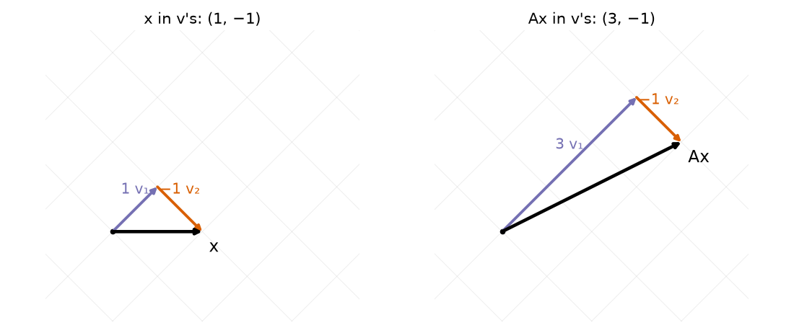
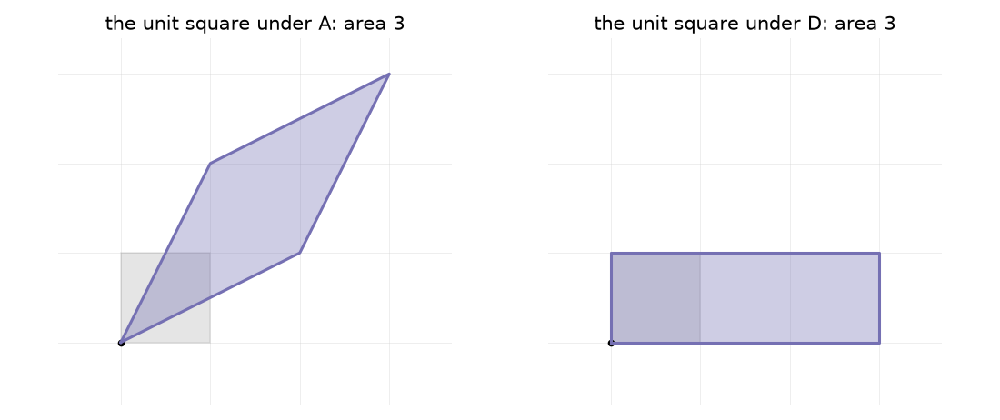

A = [[2, 1], [1, 2]]
apply = (M, p) => [M[0][0] * p[0] + M[0][1] * p[1],
M[1][0] * p[0] + M[1][1] * p[1]]
viewof v = {
const X0 = -7, X1 = 7, Y0 = -7, Y1 = 7, S = 26; // S px per unit
const W = (X1 - X0) * S, H = (Y1 - Y0) * S;
const px = p => [(p[0] - X0) * S, (Y1 - p[1]) * S];
const fromPx = (u, w) => [Math.round(u / S + X0), Math.round(Y1 - w / S)];
let state = [1, 0];
const svg = d3.create("svg").attr("viewBox", `0 0 ${W} ${H}`)
.style("width", "100%").style("max-width", `${W}px`)
.style("touch-action", "none");
const defs = svg.append("defs");
for (const [id, color] of [["v2t1", "#7570b3"], ["v2t2", "#d95f02"]])
defs.append("marker").attr("id", id).attr("viewBox", "0 0 10 10")
.attr("refX", 9).attr("refY", 5).attr("markerWidth", 5)
.attr("markerHeight", 5).attr("orient", "auto")
.append("path").attr("d", "M0,0L10,5L0,10z").attr("fill", color);
const g = svg.append("g");
const node = svg.node();
function arrow(p, q, color, width, tip, opacity = 1) {
const [a, b] = [px(p), px(q)];
g.append("line").attr("x1", a[0]).attr("y1", a[1]).attr("x2", b[0])
.attr("y2", b[1]).attr("stroke", color).attr("stroke-width", width)
.attr("stroke-opacity", opacity)
.attr("marker-end", tip ? `url(#${tip})` : null);
}
function draw() {
g.selectAll("*").remove();
for (let k = X0; k <= X1; k++) { // plain grid
arrow([k, Y0], [k, Y1], "#999", 0.7, null, 0.25);
arrow([X0, k], [X1, k], "#999", 0.7, null, 0.25);
}
const Av = apply(A, state);
const own = state[0] * Av[1] - state[1] * Av[0] === 0;
if (own) // its own line
arrow([-20 * state[0], -20 * state[1]], [20 * state[0], 20 * state[1]],
"#7570b3", 2, null, 0.35);
arrow([0, 0], Av, "#d95f02", 4, "v2t2");
arrow([0, 0], state, "#7570b3", 5, "v2t1");
const [a, b] = px(state);
g.append("circle").attr("cx", a).attr("cy", b).attr("r", 9)
.attr("fill", "#7570b3").attr("fill-opacity", 0.3)
.style("cursor", "grab");
g.append("text").attr("x", a + 10).attr("y", b - 10)
.attr("fill", "#7570b3").attr("font-size", 17).text("v");
const [c, d] = px(Av);
g.append("text").attr("x", c + 10).attr("y", d - 10)
.attr("fill", "#d95f02").attr("font-size", 17).text("Av");
node.value = [...state];
node.dispatchEvent(new Event("input", {bubbles: true}));
}
let dragging = false;
const local = e => {
const r = node.getBoundingClientRect();
return [(e.clientX - r.left) * W / r.width, (e.clientY - r.top) * H / r.height];
};
node.addEventListener("pointerdown", e => {
const [u, w] = local(e);
const [a, b] = px(state);
if (Math.hypot(a - u, b - w) < 24) {
dragging = true; node.setPointerCapture(e.pointerId);
}
});
node.addEventListener("pointermove", e => {
if (!dragging) return;
const p = fromPx(...local(e));
if (p[0] === 0 && p[1] === 0) return;
if (Math.abs(p[0]) > 3 || Math.abs(p[1]) > 3) return; // keep Av on screen
if (p[0] !== state[0] || p[1] !== state[1]) { state = p; draw(); }
});
node.addEventListener("pointerup", () => { dragging = false; });
draw();
return node;
}Linear algebra 2: the basis where it only stretches
Change of basis, part 2: A = PDP⁻¹
math
linear-algebra
Cover the right-hand column. Answer each question in your head, then look.
Part 1 ended with a matrix that turns most arrows but leaves two directions alone:
\[ A = \begin{pmatrix} 2 & 1 \\ 1 & 2 \end{pmatrix} \]
This part uses those two directions as the basis.
Arrows that don’t turn
Drag the tip of v. The orange arrow is Av, where A sends it.
| Drag v around. Does Av usually point the same way as v? | No. A turns most arrows. |
| Which arrows does it not turn? | Those along (1, 1), and those along (−1, 1). |
| What does it do to them? | Stretches them: by 3 along (1, 1), by 1 along (−1, 1). |
| What are they called? | Eigenvectors. Eigen is German for “own”: each is A’s own arrow, keeping to its own line. Think “own arrow”. |
| And the 3 and the 1? | Eigenvalues: how much each one stretches. |
To check your understanding, here is the matrix Lay opens 5.1 with (Example 1):
\[ \begin{pmatrix} 3 & -2 \\ 1 & 0 \end{pmatrix} \]
| Where does it send v = (2, 1)? | To (4, 2) = 2v. An eigenvector, with eigenvalue 2. Lay’s words: it only “stretches” v. |
| And u = (−1, 1)? | To (−5, −1). Turned: not an eigenvector. |
What does A do to x?
Call the two eigenvectors v₁ = (1, 1) and v₂ = (−1, 1), and take one arrow to work with, x = (2, 0): its coordinates in the standard basis.
Where does A send x? We could multiply A by x. Instead we’ll take three easy steps.
Step 1. Translate x into v’s.
| What are x’s coordinates in v’s? | (1, −1), because 1·v₁ − 1·v₂ = (1, 1) − (−1, 1) = (2, 0). |
Step 2. Stretch.
| What does A do to v₁? | Stretches it by 3. |
| And to v₂? | Leaves it as it is: a stretch by 1. |
| So what are Ax’s coordinates in v’s? | (3·1, 1·(−1)) = (3, −1). |
Step 3. Translate back into the usual grid.
| What is (3, −1) in v’s, in the usual grid? | 3·v₁ − 1·v₂ = (3, 3) − (−1, 1) = (4, 2). |
| Check the long way: what is A(2, 0)? | (2·2 + 1·0, 1·2 + 2·0) = (4, 2). The same. |

Naming the steps
We did the three steps with numbers. Each one is also a matrix. Name them, and A fits on one line.
| Step 3 translates from v’s into the usual grid. Have we met that? | Yes: part 1’s change-of-coordinates matrix, P. Its columns are v₁ and v₂. |
| Step 1 goes the other way. What is it? | P undone. Call it P⁻¹. |
\[ P^{-1} = \begin{pmatrix} \tfrac12 & \tfrac12 \\ -\tfrac12 & \tfrac12 \end{pmatrix}\qquad P^{-1}\begin{pmatrix} 2 \\ 0 \end{pmatrix} = \begin{pmatrix} \tfrac12\cdot 2 + \tfrac12\cdot 0 \\ -\tfrac12\cdot 2 + \tfrac12\cdot 0 \end{pmatrix} = \begin{pmatrix} 1 \\ -1 \end{pmatrix} \]
| Does it undo P? | Yes. P⁻¹ takes (2, 0) to (1, −1), and P takes (1, −1) back to (2, 0). |
| Why the −1? | As 3⁻¹ = ⅓ undoes multiplying by 3. Say “P inverse”. |
| Step 2 only stretches. What is it? | D, a matrix with the eigenvalues on its diagonal and zeros elsewhere: a diagonal matrix. |
\[ P = \begin{pmatrix} {\color{#7570B3}1} & {\color{#D95F02}-1} \\ {\color{#7570B3}1} & {\color{#D95F02}1} \end{pmatrix}\qquad D = \begin{pmatrix} 3 & 0 \\ 0 & 1 \end{pmatrix}\qquad A = P\,D\,P^{-1} \]
| Why is P⁻¹ on the right, when it’s step 1? | A matrix acts on what’s to its right, so P D P⁻¹ x is read right to left: P⁻¹ first, P last. |
Writing A = P D P⁻¹ is called diagonalizing A (Lay 5.3).
NoteThe Law of Stretching
Use a matrix’s eigenvectors as the basis, and the matrix only stretches. A = P D P⁻¹: find the coordinates, stretch them, change back.
Why anyone bothers
| What is A applied ten times to x? | Ten matrix multiplications, if done the long way. |
| And in v’s? | Stretch the coordinates ten times: (3¹⁰·1, 1¹⁰·(−1)) = (59049, −1). |
| So what is A¹⁰x? | 59049·(1, 1) − 1·(−1, 1) = (59050, 59048). |
| How much work was that? | One look-up, one power of each number, one translation back. |
Lay’s 5.3, Example 2 does the same with another matrix:
\[ \begin{pmatrix} 7 & 2 \\ -4 & 1 \end{pmatrix} = P\,D\,P^{-1}\qquad P = \begin{pmatrix} 1 & 1 \\ -1 & -2 \end{pmatrix}\qquad D = \begin{pmatrix} 5 & 0 \\ 0 & 3 \end{pmatrix} \]
| What is its k-th power? | P Dᵏ P⁻¹. Only the 5ᵏ and the 3ᵏ change. |
Same map, new matrix
Part 1 changed the basis and kept the arrow. Now we change the basis and keep the map.
| In the usual grid, A’s matrix is (2 1; 1 2). In v’s, what is it? | D = (3 0; 0 1). In v’s, A only stretches. |
| Are A and D two different maps? | No. One map, written in two bases. Lay calls such matrices similar. |
| What changed between them? | The entries. |
| What didn’t? | What belongs to the map itself: the eigenvalues, 3 and 1, for a start. |
One more number belongs to the map: how much it scales area.

| What does A do to the unit square? | Makes the parallelogram on (2, 1) and (1, 2), of area 2·2 − 1·1 = 3. |
| And D? | Makes a 3 × 1 rectangle: area 3. The same, because it’s the same map. |
| What is that number called? | The determinant. For (a b; c d), det = ad − bc. |
To check your understanding: a friend says A’s eigenvalues are its diagonal entries, 2 and 2. Are they right? Decide before you read on.
| Is 2 an eigenvalue of A? | No. A’s eigenvalues are 3 and 1. |
| When are the diagonal entries the eigenvalues? | When the matrix is diagonal, like D. Entries depend on the basis; eigenvalues don’t. |
NoteThe Law of Invariance
A change of basis changes a matrix’s entries, not the map. What belongs to the map survives it: its eigenvalues, and its determinant.
Finding the eigenvalues yourself
So far, 3 and 1 were handed to you. Here is where they come from. I is the identity, (1 0; 0 1), the matrix that changes nothing.
| If v is an eigenvector with eigenvalue λ, what does A − λI do to v? | Av − λv = λv − λv = 0. It flattens v to 0. |
| A matrix that flattens an arrow to 0 squashes the square onto a line. What area is left? | 0. So det(A − λI) = 0. |
| For our A, what is A − λI? | (2−λ 1; 1 2−λ), so det(A − λI) = (2 − λ)² − 1. |
| When is (2 − λ)² − 1 = 0? | When 2 − λ = 1 or −1: λ = 1 or λ = 3. |
| Check λ = 3. | A − 3I = (−1 1; 1 −1) sends (1, 1) to (0, 0): the eigenvector, flattened. |
det(A − λI) = 0 is Lay’s characteristic equation (5.2).
Not every matrix is so kind
\[ S = \begin{pmatrix} 1 & 1 \\ 0 & 1 \end{pmatrix} \]
| What is S(1, 0)? | (1, 0). Not turned. |
| What is S(0, 1)? | (1, 1). Turned. |
| Which arrows does S not turn? | Only those along (1, 0). One line. |
| How many basis vectors does a flat page need? | Two. |
| So can we write S = P D P⁻¹? | No. There aren’t enough eigenvectors. |
| Look back at A’s v₁ = (1, 1) and v₂ = (−1, 1). Notice anything? | They are perpendicular. |
| Is that luck? | No. A is symmetric: it is its own mirror across the diagonal. That is part 3. |
| And what about S? | Use two different bases, one for the arrow going in and one for the arrow coming out. That is SVD, part 4. |
In Lay
Section and example numbers from [Lay16].
| Here | Lay |
|---|---|
| own arrows | eigenvectors (5.1) |
| how much each stretches | eigenvalues (5.1) |
| A = P D P⁻¹ | diagonalization; the Diagonalization Theorem (5.3) |
| A¹⁰x by stretching | powers, Aᵏ = P Dᵏ P⁻¹ (5.3) |
| P⁻¹ | the inverse matrix (2.2) |
| S has too few eigenvectors | S is not diagonalizable (5.3) |
| A and D: one map, two matrices | similar matrices; same eigenvalues, 5.2 Theorem 4 |
| area scale, ad − bc | the determinant; area = |det A|, 3.3 Theorem 9 |
| det(A − λI) = 0 | the characteristic equation (5.2) |